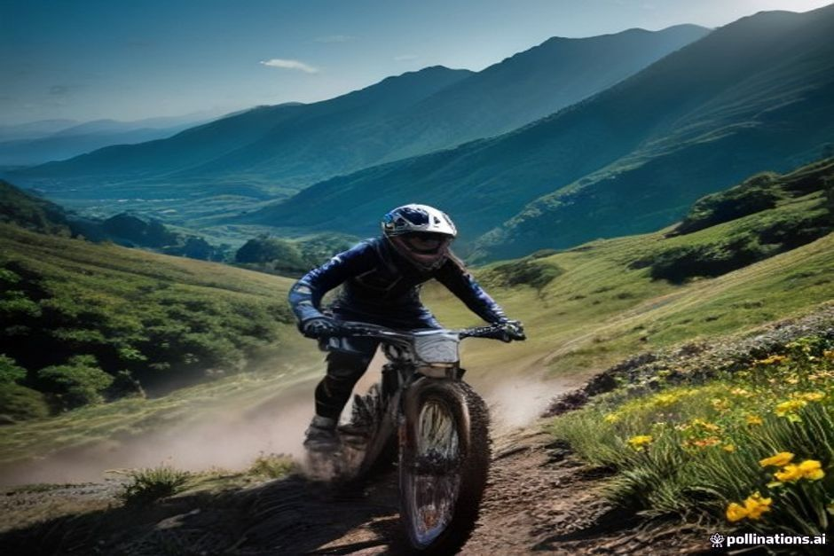
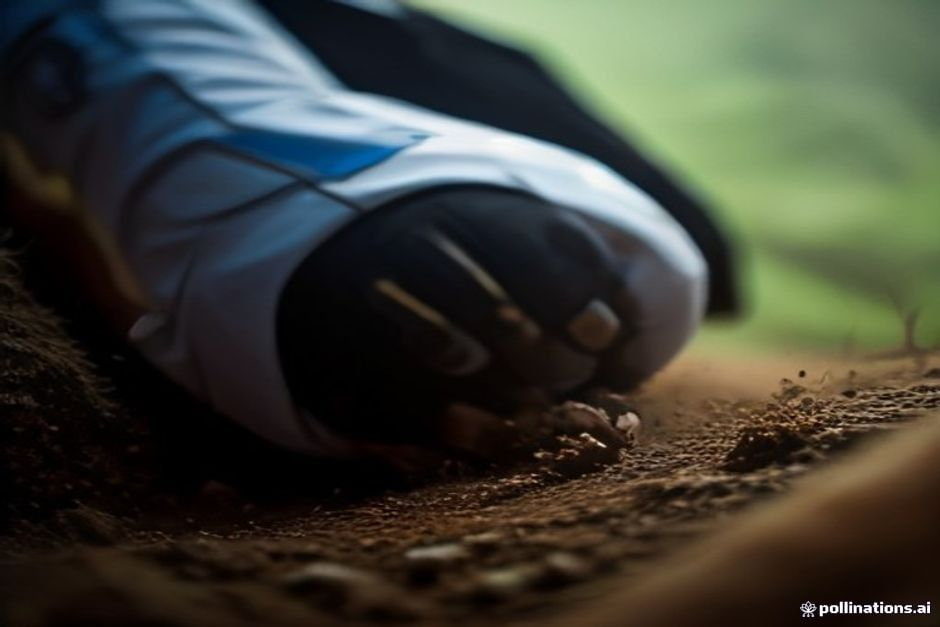

Mentre la maggior parte dei visitatori in questi giorni prenota passeggiate lungo le levada e crociere al tramonto, qualche centinaio di biker sta fissando il numero di gara al manubrio per una delle settimane più dure del calendario sportivo di Madeira. Ecco cos'è davvero la Trans Madeira, quando si corre e se cambia qualcosa per il tuo viaggio.
Cos'è la Trans Madeira?
La Trans Madeira è una gara a tappe enduro in mountain bike, cronometrata, di sei giorni sui sentieri di montagna e costieri di Madeira, organizzata con il nome Trans Madeira powered by Scott. Collega più di 30 prove speciali su circa 250km tra sentieri e trasferimenti in sella, riunendo professionisti enduro sponsorizzati e forti amatori provenienti da tutto il mondo della mountain bike europea. A differenza di una gara di sola discesa, i biker pedalano anche lunghi tratti tra una prova cronometrata e l'altra: per questo la resistenza su sei giorni conta quasi quanto l'abilità tecnica pura.

Quando si corre l'edizione 2026?
L'edizione autunnale 2026 si svolge dal 28 September al 3 October 2026, la seconda delle due edizioni organizzate sull'isola quest'anno dopo quella estiva di maggio. La data più avanzata non è casuale: a fine settembre il caldo più intenso dell'estate si è attenuato sui sentieri esposti in quota, mentre il terreno è di norma ancora abbastanza asciutto da garantire grip, prima dell'arrivo dei mesi invernali più piovosi.
Com'è davvero il percorso?
I sei giorni attraversano il nord, il sud, l'est e l'ovest dell'isola, concatenando più di 30 prove speciali nel corso della settimana invece di ripetere un unico anello nel bosco. I dettagli esatti di ogni tappa restano di solito riservati dagli organizzatori fino alla settimana di gara, ma le edizioni passate hanno incluso tratti alpini sopra Funchal e Câmara de Lobos, sulla costa sud, insieme a sentieri più isolati a nord e a ovest: un percorso pensato per mostrare quanto cambia il terreno su un'isola tutto sommato piccola, dalle creste vulcaniche asciutte alla fitta e umida laurisilva.
Chi partecipa davvero?
La Trans Madeira si colloca all'estremo più impegnativo delle gare a tappe enduro. Le distanze giornaliere vanno da 35 a 60km, trasferimenti inclusi, e i sentieri spaziano da single track scorrevoli nel bosco a creste esposte e sconnesse dove un errore ha conseguenze serie. Richiama professionisti enduro sponsorizzati che la vivono come momento clou della stagione, insieme ad amatori forti che si sono allenati apposta per sei giorni consecutivi di gara: non è un evento da weekend tranquillo e non è pensato davvero per chi si avvicina per la prima volta all'enduro.
È la stessa cosa del Rali da Madeira?
No, e i due eventi vengono confusi soprattutto perché condividono l'isola e le parole «rally» o «gara». Il Rali da Madeira è un rally automobilistico su strade chiuse, che blocca tratti della rete stradale pubblica per le prove cronometrate, di solito legato alla vendemmia autunnale. La Trans Madeira è una gara di mountain bike che si corre quasi interamente su sentieri fuoristrada da trekking e da bici e sfiora appena le strade carrozzabili. Sono entrambe gare a tappe competitive sulla stessa isola, ma per chi è solo di passaggio creano disagi molto diversi.

Si può assistere alla gara da visitatori?
Non facilmente, ed è parte del suo carattere. La maggior parte delle prove speciali si corre su stretti sentieri di montagna, lontano dai parcheggi e dai punti panoramici pubblici, quindi non è organizzata come uno sport da guardare a bordo strada come lo è un rally su strade chiuse. Il modo più realistico per vederne un po' è nei pressi dell'area di partenza o di arrivo di una prova, oppure tramite la copertura quotidiana degli organizzatori, invece di pensare di piazzarsi lungo un sentiero con un caffè in mano.
Cambia qualcosa in una normale settimana a Madeira?
Quasi niente. Poiché la gara resta sui sentieri da trekking e da bici anziché sulla rete stradale pubblica, incide poco sui tempi di guida, sugli orari dei traghetti o sulle attività costiere durante la settimana di gara: un netto contrasto con le chiusure stradali che comporta un rally automobilistico. Se sei sull'isola questa settimana per qualsiasi altro motivo, da una passeggiata lungo una levada a una giornata sull'acqua, la settimana di gara non dovrebbe stravolgere i tuoi piani.
Qual è il modo più semplice per scoprire l'isola nella stessa settimana?
Scambia la montagna con la costa. Se sei giorni di gara enduro in quota non sono la tua idea di vacanza a Madeira, la stessa settimana si presta benissimo a un ritmo opposto: un'escursione in barca privata con Chifbay lungo la costa sud tocca Cabo Girão, Fajã dos Padres e l'acqua calma sotto le stesse scogliere che i biker percorrono dall'alto, senza bisogno di allenamento in bici, di abilità tecnica sui sentieri o di un numero di gara appuntato sulla schiena.
Un'isola, due modi molto diversi di trascorrervi sei giorni.
La Trans Madeira è un evento davvero serio per i biker che vi partecipano, ma per tutti gli altri sull'isola in quella settimana è per lo più un rumore di fondo: un promemoria di quanto territorio Madeira racchiuda nel suo piccolo profilo vulcanico, che lo si attraversi su due ruote o si guardino scorrere le stesse scogliere dal ponte di una barca.